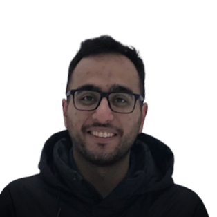
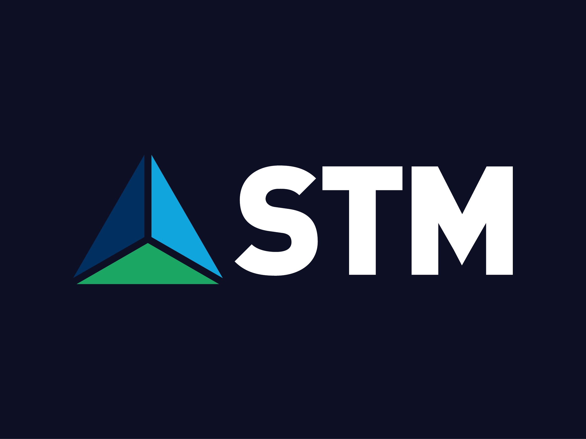
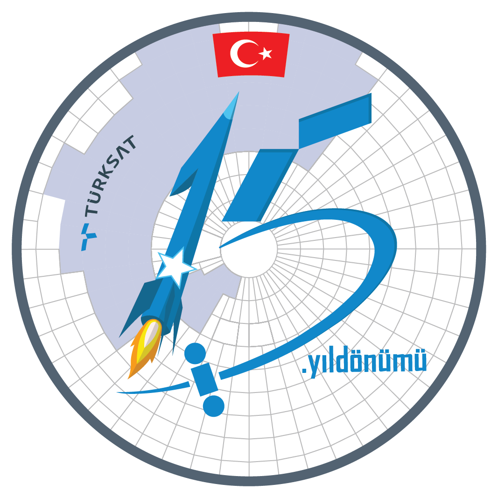

Ömer Levent Durdalı
Hello.
I ❤️ reading tech and defence industry articles and learning about Arduino, Raspberry Pi like electronics. Oh ans I just started solving OSINT Geolocation Challenges, you can check them out on my Medium
Experience
-
-
Cyber Security Directorate - Security Management and Architecture Team
- Managing the Information Security process and providing coordination on Governance, Risk and Compliance for Cyber Security.
- Carrying out activities to increase Information Security Awareness, creating training and communication roadmaps, and carries out studies that will increase overall security competence.
- Determining Cyber and Information Security strategy in compliance with overall company strategies.
- Working remotely with the Istanbul team.
- Sep 2021 - Present
-
-
Security Operation Center (SOC)
- IBM Security SOAR (Resilient) App, Rule and Playbook Integration Server Configuration and Management.
- Resilient and MISP automation Project
- Splunk and IBM Qradar Integration and Management Projects.
- Metric Projects and Basic SOC Engineering
- Stack: MSIP, QRadar, Resilient, Triage , Splunk, Python
- May 2021 - Jul 2021 · (3 months)
-
STM DefenceCyber Security Intern
-
Cyber Security Directorate / Cyber Fusion Center
- Web Application Development with Django Framework ( Threat Intelligence Application )
- Honeypot Configuration and Management
- Attack Surface Analysis & Reports
- Open Source Intelligence (OSINT) with variety of tools
- Scripts with Python
- Stack: Django Development, Threat Intelligence Platform Development,Honeypot ,VBA Macro, Malware Analysis (PoetRAT), Attack Surface Analysis , OSINT (Tor Node, Spiderfoot, Maltego, Recon-ng), Python
- Feb 2020 - Jun 2020 · (5 months)
-
Turksat Satellite Inc.IT Security Intern
-
Enterprise Information and Cyber Security Directorate
- Wrote and Implemented Switch and Router Hardening Document.
- Network Security and Monitoring.
- Basic VBA work
- Analyzed and documented different web tracker behaviors that effected certain servers
- IT Security related topics
- Stack: Cisco CLI, Cisco Routers and Switch, VBS Macro, Python, Log4j, Tomcati, Regex,
- Jun 2019 - Aug 2019 · (3 months)
Education
-
 Bachelor of Science - Computer Technology and Information SystemsBilkent University
Bachelor of Science - Computer Technology and Information SystemsBilkent University- 3rd and 4th year Honour Certificate
- Member of Information Security Society, Science Fiction and Fantasy Society and East Asia Society
- Projects: Elixir (Agricultural Irrigaiton support and optimizaiton system) and Smart Home Automation System
- Publications: Türkiye’de Linux ve Linux Kullanıcıları Derneği and Total Number of Defence related UAV compression in the Middle East: Turkish Security Forces
- 2,96 / 4.00 GPA
- 2017 - 2021
-

 Technical High School Degree - Mechanical TechnologiesASO Technical College
Technical High School Degree - Mechanical TechnologiesASO Technical College- Draw hand-made Technical Drawings, use AutoCAD and Solid Works / Solid CAM
- Used CNCs, lathes, and mills.
- Here is my GrabCAD profile.
- 2013 - 2017